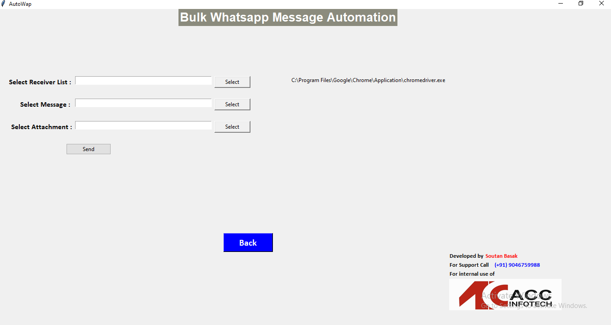
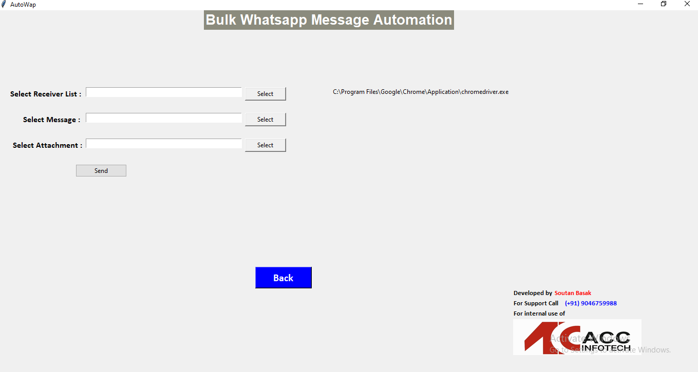

Bulk WhatsApp Sender
A Python-based desktop application built with Tkinter and Selenium that automates sending bulk WhatsApp messages. Designed to help businesses and HR teams streamline communication with customers or employees.
Features
- Import contacts from Excel/CSV files
- Send personalized messages in bulk
- Supports text, emojis, and attachments
- WhatsApp Web automation using Selenium
- Logs and error handling for failed deliveries
Screenshots
 

Technologies Used
Python, Tkinter, Selenium, Pandas
Challenges & Learnings
One major challenge was handling WhatsApp Web’s dynamic loading and QR code authentication. Learned advanced Selenium automation techniques, managing delays, and exception handling to make the process stable. Also explored Pandas for handling contact lists efficiently.